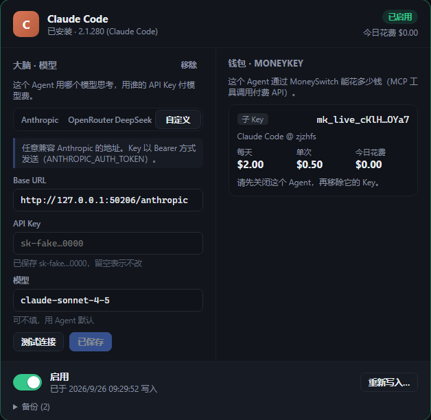
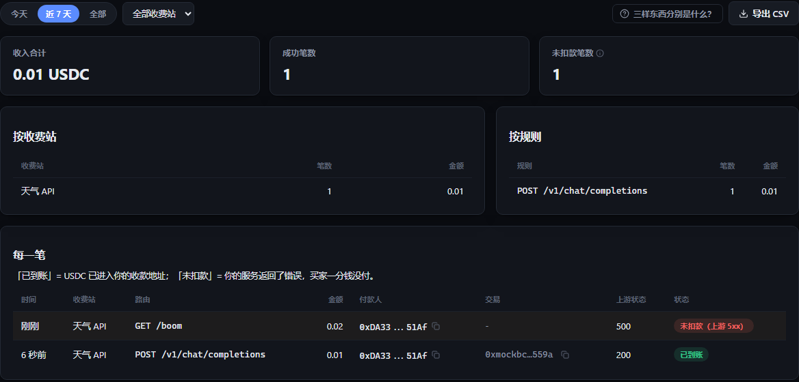
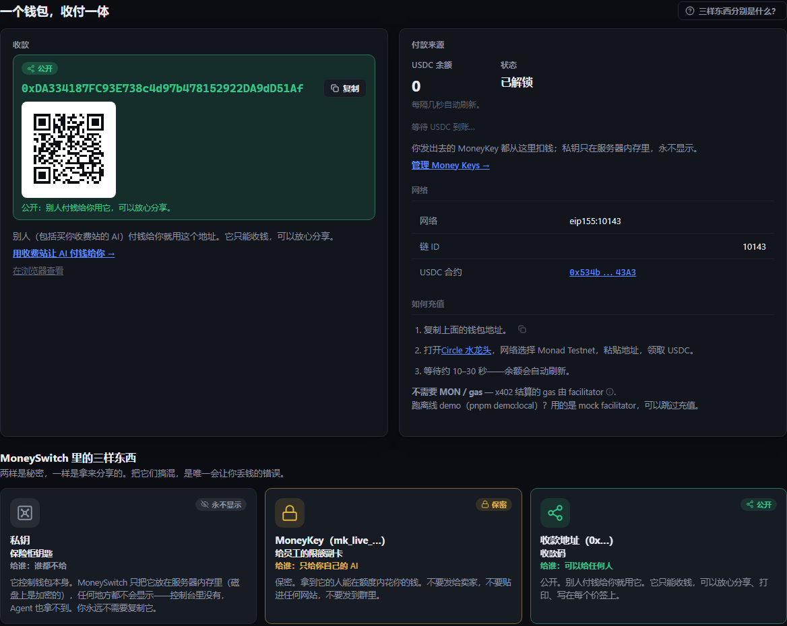
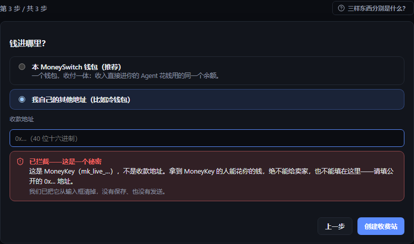
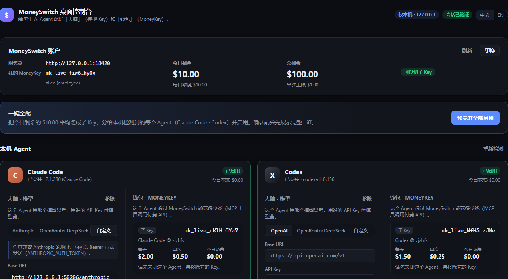
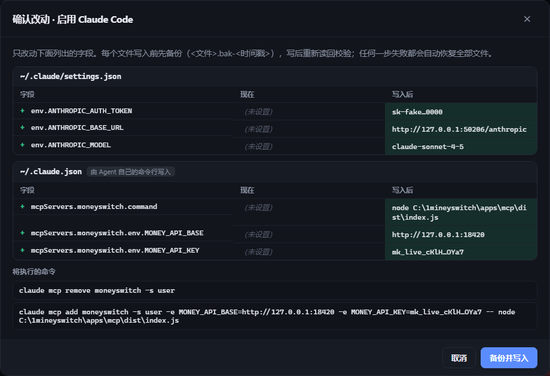
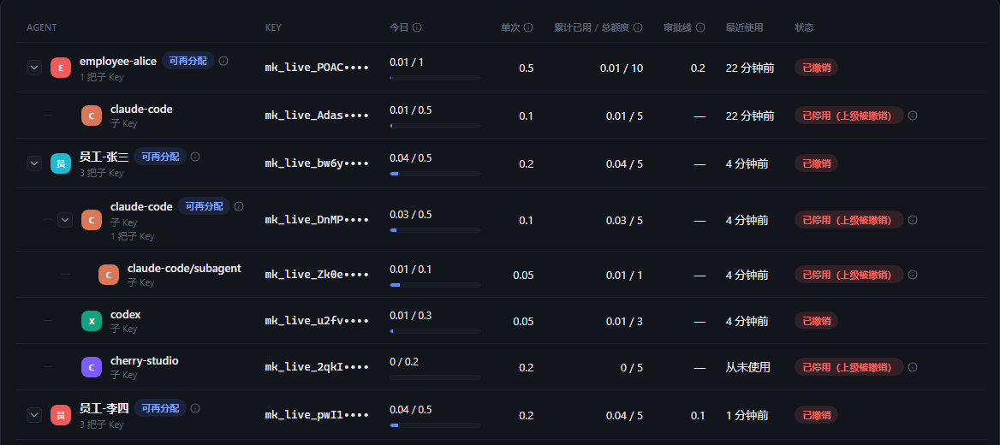

MMoneySwitch
MONAD METROPOLIS · 深圳 HACKER HOUSEAPI keys for money
MoneySwitch
Give your AI an API key for money.
让 AI 像用 API Key 一样花钱——而不是把钱包交给 AI
x402，即插即用
USDC
Monad
x402
npm · moneyswitch@0.5.0
Monad Metropolis 2026 · 深圳 · 2026.09.26
MONEYKEY
mk_live_•••• ••••
MoneySwitch · API keys for money
问题
AI 已经能付钱了，
但没人敢把钱包交给它。
.env · 今天的 x402 客户端示例
PRIVATE_KEY=0x3f9a…
01
x402 已是现实
Agent 按次付 USDC：
HTTP 402 → 签名 → 结算。
02
一次注入，钱包转空
私钥在程序里，一次 Prompt Injection 就够了。
03
规模没有答案
10 个、100 个 Agent 的钱怎么管？
MoneySwitch · Monad Metropolis 深圳
MMoneySwitch
Before / AfterBefore / After
x402 很强，但对普通人太难。
我们把它变成一把 API Key。
BEFORE今天用 x402
.env + client.ts
# .env
PRIVATE_KEY=0x… ← 私钥直接进程序
import { x402Client, x402HTTPClient } from "@x402/core/client";
import { wrapFetchWithPayment } from "@x402/fetch";
import { ExactEvmScheme } from "@x402/evm";
const client = new x402Client()
.register("eip155:10143", new ExactEvmScheme(signer));
const pay = wrapFetchWithPayment(fetch, new x402HTTPClient(client));
还得先搞懂：
HTTP 402
EIP-3009
facilitator
gas
USDC 合约 0x534b…43A3
CAIP-2 网络 ID
额度、撤销、审计、多 Agent 分钱——全都要自己写
AFTER用 MoneySwitch只要 2 行
.env
MONEY_API_BASE=http://127.0.0.1:4020
MONEY_API_KEY=mk_live_…
或者在 Cherry Studio / OpenAI SDK 里填两个框：
发 Key配额度看用量一键启用
左侧 API 取自本仓库 packages/x402/src/client.ts（x402 官方 SDK）
方案 · MoneyKey
熟悉的那一套，用在钱上。
AI 已经把用户教育好了——不是钱包，是 API Key。NewAPI / OpenRouter 让管 token 成了常识。
像 NewAPI管 Key 和额度发 Key · 配额度 · 看用量
+
像 CCSwitch管一键切换每个 Agent 一个开关
=
MoneySwitch这套体验，用在钱上钱在金库，AI 只拿有额度、可撤销的 mk_live_…
像 NewAPI：给谁用、每天多少、单次多少、多少要审批——填完就是一把 Key
桌面控制台
本机演示 · 假模型 Key
像 CCSwitch：每个 Agent 一张卡、一个「启用」开关，一键写好配置
截图：本地 / 本机演示实例，临时目录，假模型 Key
怎么工作
签名之前，先过策略。
用量$0.01
STEP 01
Agent 调用
带着 MoneyKey 调用付费接口
mk_live_…STEP 02
402 报价
卖方返回 HTTP 402 与价格
HTTP 402STEP 03 · 签名之前
策略引擎
MoneySwitch 逐项检查
STEP 04
签名 + 结算
本地签 USDC 授权，facilitator 在 Monad 结算
EIP-3009STEP 05
返回 + 记账
返回内容，用量实时入账
+$0.01
底层全用现成的：x402 官方 SDKMonadCircle USDC·我们不发币、不造协议。
MoneySwitch · Monad Metropolis 深圳
MMoneySwitch
OpenAI / NewAPI 兼容OpenAI / NewAPI 兼容
MoneyKey 直接当 OpenAI API Key 用
BASE URLapi.openai.com
127.0.0.1:4020/v1
计费按 token 扣虚拟额度
每次调用在 Monad 上真实结算 USDC
零改造接入
openai SDKCherry StudioOpen WebUIClaude Code (MCP)NewAPI 上游渠道
chat.mjs · openai SDK
import OpenAI from "openai";
const client = new OpenAI({
baseURL: "http://127.0.0.1:4020/v1",
apiKey: "mk_live_…",
});
用一句话解释什么是 x402 协议
x402 是一种基于 HTTP 402 的开放链上支付协议……
0.01 USDCtx 0xd3697c…80ad326 tokens已上链核对
真实对话付款 · openai SDK · Monad 测试网
护栏
签名之前先拦，六道防线。
Prompt Injection 让它转 $500？
单笔上限 $0.20，签名都不会发生。
BLOCKED · PER_REQUEST_LIMIT_EXCEEDED
MoneySwitch · Monad Metropolis 深圳
收款 · v0.5 收费站
卖家也不用懂 x402：给 API 立收费站。
一条命令，或 Dashboard 三步向导。付款与收款，是同一条 x402 链路的两端。
买家AI Agent
MoneySwitch收费站
卖家你的 API
- AI 付 x402 USDC 才放行
- 上游报错不结算，买家不扣钱
- 卖家不需要任何秘密，只要公开收款地址
terminal · 立一个收费站
$ npx moneyswitch sell \
--upstream http://localhost:8000 \
--price 0.01 --pay-to 0x…
收费站真实收款 · Monad 测试网0x6239ce7d…d38c
0.01 USDC进入卖家地址
MoneySwitch · 收入
本地演示实例 · mock 数据
截图：本地演示实例，mock 数据 · tx 为 Monad 测试网真实收款
三样东西
两样是秘密，一样拿来分享。
MoneyKey mk_live_…
= 给员工的限额副卡
只给自己的 AI
收款地址 0x…
= 收款码
给任何人，打印、贴在价签上都行
钱包 · 收付一体
mock 数据
收费站向导 · 第 3 步
mock 数据
已拦截——这是一个秘密
把 MoneyKey 当收款地址粘进去？
当场拦下，输入框清空，不保存、不发送。
截图：本地演示实例，mock 数据
谁在用 · v0.4 多级子 Key
四个角色，一棵 Key 树。
管理员 ms_admin_
控制台：钱包 / 渠道 / 发 Key / 审批
员工 mk_live_
「我的额度」：额度 / 对话 / 流水，可再切子 Key
Agent MCP / OpenAI
Claude Code / Codex 等，按策略花钱
公司USDC 资金池
员工 · 子 Key员工-张三
员工 · 已撤销员工-李四
Agent · 子 KeyClaude Code
Agent · 子 KeyCodex
级联停用Claude Code
级联停用Codex
子 Key 不超父额度付款沿祖先链检查撤销级联
公司 → 员工 → 每个 Agent
v0.4 · 本机桌面控制台
每个 Agent 一张卡：大脑 + 钱包
钱包
= MoneyKey这个 Agent 最多能花多少钱
$npx moneyswitch ui
MoneySwitch 桌面控制台 · 127.0.0.1
本机演示 · 临时目录 · 假模型 Key
确认改动 · 启用 Claude Code

截图：本机演示，临时目录，假模型 Key
Monad 测试网实测
真实数据，全部链上可查。
12
笔真实结算
x402 付款与收款
0 笔 mock
$0.01
每次调用收费
上游推理成本仅 $0.000126
0
MON gas
Agent 金库不需要 gas
facilitator 代付
首笔付款0x1c83a4…4d4d
Claude Code · MCP 自主付款0x1cdf773e…dc2729
管理员审批后付款0x7f599d68…e165
openai SDK 对话0xd3697c…80ad
收费站收款 · 0.01 USDC 进卖家0x6239ce7d…d38c
Monad 测试网 eip155:10143 · 12 笔已结算 / 0 笔 mock
现场演示
付钱、拦截、分权、收钱，六步走完
01开 Key
Dashboard 给 Claude Code 开一把 MoneyKey
02Claude Code 自付
经 MCP 自己付 $0.01，Usage 出现链上 tx
03超额被拦
超单笔上限：PER_REQUEST_LIMIT_EXCEEDED
05员工切子 Key
给自己的 Agent 切子 Key，不超父额度
06收费站收款
npx moneyswitch sell，AI 付 USDC 才放行
MoneySwitch · Money Keys（子 Key 树）
本地演示实例 · mock 数据
MOCK截图为本地演示实例、mock 数据：上级撤销后，子 Key 显示「已停用（上级被撤销）」
MoneySwitch · Monad Metropolis 深圳
路线图
v0.1 – v0.5 已发布。
v0.1
MoneyKey · 策略引擎 · x402 · MCP · Dashboard
v0.2
OpenAI / NewAPI 兼容网关 · 渠道 · Playground
NEXT下一步
按 token 计价x402 upto
钱包驱动MetaMask · OKX
企业多用户审批流
主网Mainnet
MoneySwitch · Monad Metropolis 深圳
开源与生态
开源，一条 npx 就能用。
GITHUB
github.com/dongsheng123132/moneyswitch
官网
moneyswitch.dev
Apache-2.0接入层：npm 包、MCP、卖方示例
AGPL-3.0服务端：Server、Dashboard、核心包
npmmoneyswitch@0.5.0已发布 · npmjs.com
$ npx moneyswitch connect接上本机 Claude Code / Codex
$ npx moneyswitch ui本机桌面控制台
$ npx moneyswitch sell在任何 API 前立收费站
$ npx moneyswitch demo即将发布 · 0.5.1
$ npx moneyswitch-server即将发布 · 0.5.1
站在现成的基础设施上：x402 官方 SDKMonadCircle USDC·不发币、不造协议。
MoneySwitch · Monad Metropolis 深圳
MoneySwitch
MoneySwitch
Your AI gets pocket money.
You keep the bank account.
给 AI 零花钱，银行卡留在你手里。x402，即插即用。
$ npm i -g moneyswitch
moneyswitch.dev·github.com/dongsheng123132/moneyswitch
API keys for moneyUSDCMonadx402
Monad Metropolis · 深圳 Hacker House · 2026.09.26